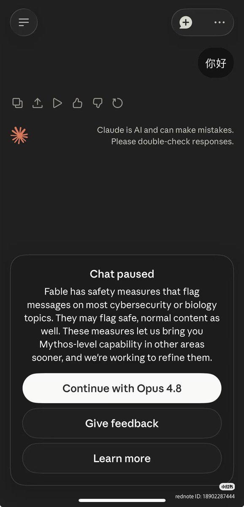

奶昔🥤
@realNyarime
因为“你好”是中国人行为？只能说达里奥为了防止被开源模型蒸馏，所降级的锁
不过5x跑一下5H就完了…… 朋友20x跑完一波75%没了，太哈人了

Xudong Han
@Xudong07452910
刚跟 Claude 说了句"你好"，被判定为高危行为，强制降级 😅
因为 Anthropic 发布了最强公开模型 Fable 5（Mythos 级）。它自带安全分类器，一旦怀疑你在搞网络攻击、生物化学或模型蒸馏，就自动切到 Opus 4.8 兜底。
官方原话："可能会误伤正常内容"。
是的，包括打招呼。我的"你好"里到底藏了什么 https://t.co/jWFnUPGKQ7